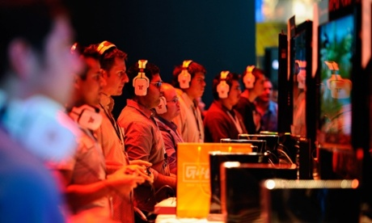

Amazon and Hachette feud could rewrite the book on publishing

The battle between Amazon and the French publisher Hachette is not just a spat about the price of books. Their row over ebook prices, which led to the online retailer freezing out pre-orders of Hachette books and has provoked angry words from authors such as Donna Tartt and Phillip Pullman, could determine the next chapter of the publishing industry.
On one side is "the everything store" that sold $75bn (45bn£) of goods online last year, from toothbrushes to tents and is estimated to sell 90% of ebooks in Britain. On the other is one of the world's biggest publishers, whose parent company, French conglomerate Lagardere, earned 7.2€bn (5.8bn£) last year from its print and broadcasting empire.
But Hachette's starring role is more than anything a quirk of timing, as all the major publishers face fresh negotiations with Amazon over the coming months. And this latest dispute, which strikes at the heart of their business model, comes as the traditional publishers face changes sweeping through the industry. Independent bookshops continue to close, while mobile games and on-screen entertainment are competing for readers' scarce attention like never before.
Twitch: Why Amazon's $1bn purchase is all about the ads
Amazon is to purchase video-game streaming site Twitch for almost $1bn, the firms announced on Monday.
The acquisition sees Amazon gazumping Google, which had previously all-but-confirmed its own acquisition of the company before balking at the last minute, reportedly due to antitrust concerns.
Twitch allows gamers worldwide to film themselves playing video games and stream the resulting shows live to the site's total user base of 50 million people monthly.
It has become a key part of the competitive gaming circuit, letting audiences of up to 30 million people watch professional gamers go head-to-head in massively popular video games such as League of Legends and Dota 2. The purchase will see Amazon acquiring all outstanding shares in Twitch for $970m in cash.
"Broadcasting and watching gameplay is a global phenomenon and Twitch has built a platform that brings together tens of millions of people who watch billions of minutes of games each months from The International, to breaking the world record for Mario, to gaming conferences like E3. And, amazingly, Twitch is only three years old," said Amazon's founder and CEO Jeff Bezos.